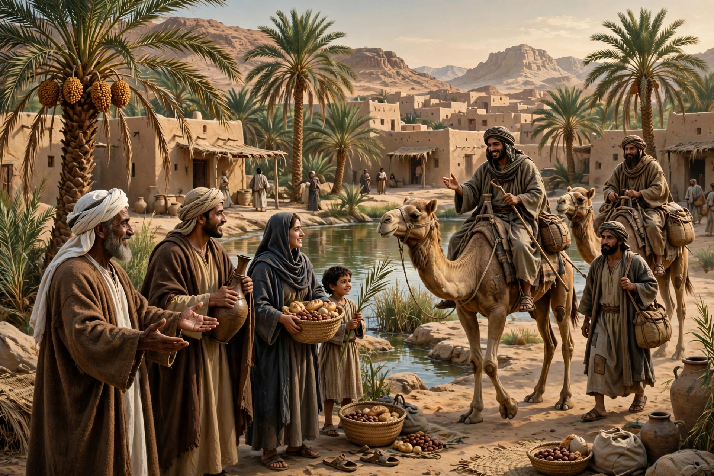

The Ansar (Arabic: الأنصار, "The Helpers") were the local inhabitants of Medina who, after the Hijrah in 622 CE, took the Islamic prophet Muhammad and his followers (the Muhajirun, emigrants from Mecca) into their homes and embraced Islam. They belonged mainly to the Arab tribes of Banu Aws and Banu Khazraj.
Before the Hijrah, delegations from Medina met Muhammad at Aqaba and pledged allegiance, inviting him to Medina as an arbitrator among their feuding tribes. When the Meccan emigrants arrived, Muhammad established a bond of brotherhood (mu'akhah) between individual Muhajirun and Ansar, and the Ansar shared their homes, land, and wealth with the newcomers.
The Ansar formed a large part of the Medinan community and its armies, fighting in the battles of Badr, Uhud, and the Trench. The Quran praises them (notably in Surah At-Tawbah 9:100 and Al-Hashr 59:9) for their generosity and for preferring the emigrants over themselves.
On the day Muhammad died (632), the Ansar gathered at the Saqifah of Banu Sa'ida to choose a leader of their own, Sa'd ibn Ubadah, before Abu Bakr was acclaimed caliph — an episode that foreshadowed the later Sunni–Shia dispute over succession. Under the caliphate, the Ansar remained respected but gradually lost political prominence to the Quraysh. Their descendants retained an honored status in Islamic tradition.
The name "Ansar" has been adopted by various later groups, including the followers of Muhammad Ahmad (the Mahdi) in Sudan in the 19th century, and by a number of modern organizations.